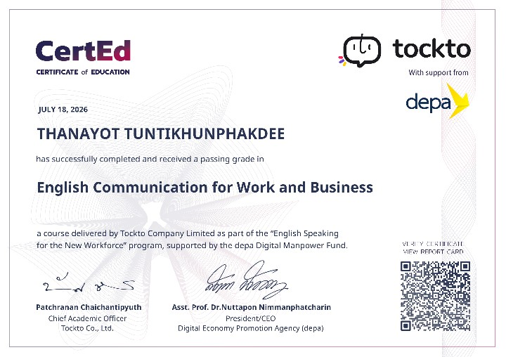

case files [1]

NO_IMAGE_DATAFILE_01
เกียรติบัตรผ่านการอบรมหลักสูตร English Communication for Work and Business
เกียรติบัตรฉบับนี้มอบให้แก่ผู้ที่ผ่านการอบรมและผ่านเกณฑ์การประเมินผลในหลักสูตร English Communication for Work and Business ซึ่งมุ่งพัฒนาทักษะการสื่อสารภาษาอังกฤษสำหรับการทำงาน การติดต่อสื่อสารในองค์กร และการดำเนินธุรกิจ เพื่อเพิ่มศักยภาพด้านภาษาอังกฤษและเสริมความพร้อมในการทำงานในยุคดิจิทัล โดยจัดอบรมโดย Tockto Company Limited ภายใต้โครงการ English Speaking for the New Workforce และได้รับการสนับสนุนจาก สำนักงานส่งเสริมเศรษฐกิจดิจิทัล (depa)